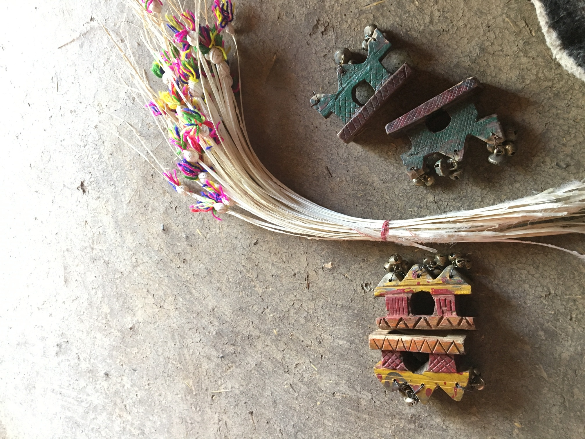

Publications
Book Chapters
Dalit Intersectionality as Method and Theory: Women’s Narratives from the Margins of Urban Progress
In Intersectionality beyond Eurocentrism (forthcoming)
Link Here
Peer-reviewed Articles
Dreams Deferred: Navigating Urban Aspiration and Vulnerability among Informal Laborers in Hyderabad
Anthropology of Work Review (Under Review)
Ethnography in Crisis - Fieldwork, Care, and Survival in Tumultuous Times
Journal for the Anthropology of North America (JANA)
Link Here
Informal Labor Blues: Gendered Effects of COVID-19 and Beyond on Women Belonging to Backward Castes in Hyderabad, India
Journal of the Indian Anthropological Society
Link Here
Informal Labor Blues: Effects of COVID-19 on Dalit Caste Women in Hyderabad
Interdisciplinary Knowledge Series, Women’s Studies Unit, Bhairab Ganguly College, New Delhi Publishers
Gender transformative approach to societal empowerment
Indian Journal of Women and Social Change
Link Here
Re-examining WASH Outcomes for Behaviour Change and Development: Case of two Districts in Bihar
Indian Association of Social Science Institutions (IASSI) Quarterly-Contributions to Indian Social Science
with Saurabh Sood
Research Essays, Op-Eds and Reports
Dreams Deferred: Navigating Aspiration and Constraint in Urban India’s Margins
Center for the Study of Women in Society (CSWS) Annual Review, University of Oregon
Informal Labor Blues: Gendered Effects of COVID-19 and Beyond on Backward Caste Women in India
Center for the Study of Women in Society (CSWS) Annual Review, University of Oregon
Let them Eat Cake: Narrative Around Food Amidst the Pandemic among Backward Communities in India
The Village Square Journal with Prapti Adhikari
3ie’s Agricultural Innovation Evidence Programme: summary from our learning workshops
International Initiative for Impact Evaluation with Mark Engelbert and Deeksha Ahuja
Link Here
Nourishing Hard to Reach Communities
Vihara Innovation Network for Reckitt Benckiser with Gayathri Sreedharan, Divya Datta, Neha Jain
Link Here
Change through Communities: Lessons from District Bureaucrats
Sehgal Foundation Newsletter
Link Here
Positive Deviance and Appreciative Inquiry: The story of slowly transforming Sadai
The Village Square Journal
Link Here
Do governance and development go hand in hand
New Delhi Times with Saurabh Sood
Link Here
Measuring happiness and sustainable development in India
SDG Philanthropy Platform with Saurabh Sood
Rapid Assessment of the Phasing Out of Hazardous Pesticides in Dhoraji, Gujarat
Better Cotton Initiative with Prerna Mukharya, Paramjeet Chawla
Link Here
Work in progress
Navigating Margins: Gender, Identity, and Developmental Discourse among Ethnic Minorities
with Sayak Khatua
Threads of Survival: Kinship, Gender, and Intersectional Dynamics in Urban Slums
with Sayak Khatua